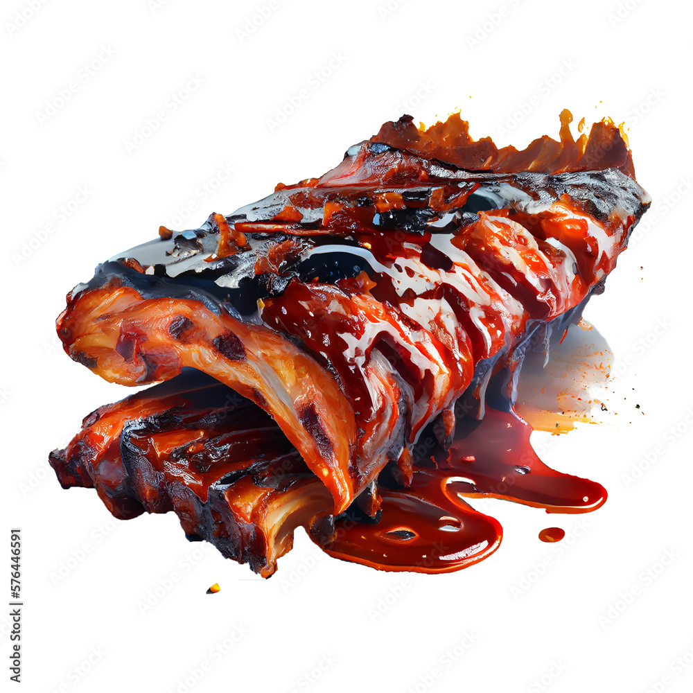

Home
BBQ Ribs

This BBQ ribs recipe may be different than others you've tried, but for super tender ribs, give it a try!
Lean, country-style pork ribs are boiled in seasoned water until tender,
then finished up in the oven under a blanket of your favorite barbecue sauce as they bake to perfection.
Ingredients
-
country-style pork ribs
-
kosher salt
-
garlic powder
-
black pepper
-
barbeque sauce
Steps
-
Place ribs in a large pot and cover with water.
-
Stir in kosher salt, garlic powder, and pepper,
and bring water to a boil over medium heat for 40 to 45 minutes.
-
Remove ribs from the pot, and place them in a 9x13-inch baking dish.
Pour barbeque sauce over ribs.
Cover the baking dish with aluminum foil.
-
Bake in the preheated oven until the internal temperature of the pork has reached
160 degrees F (70 degrees C), 1 to 1 1/2 hours.